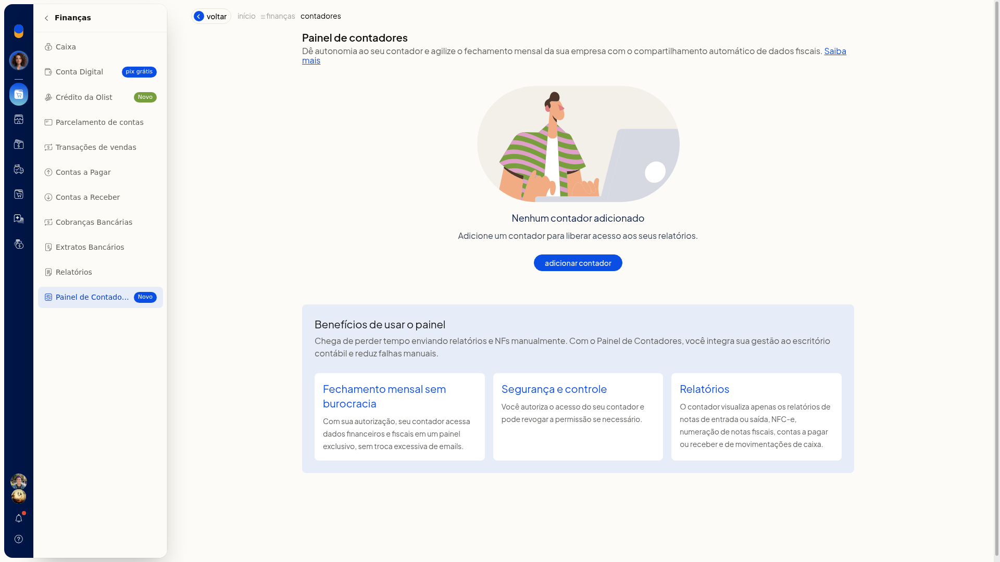
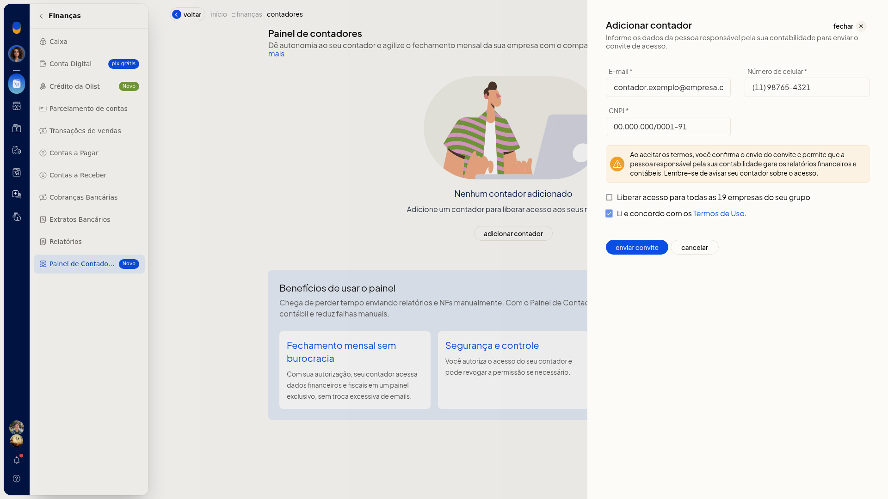
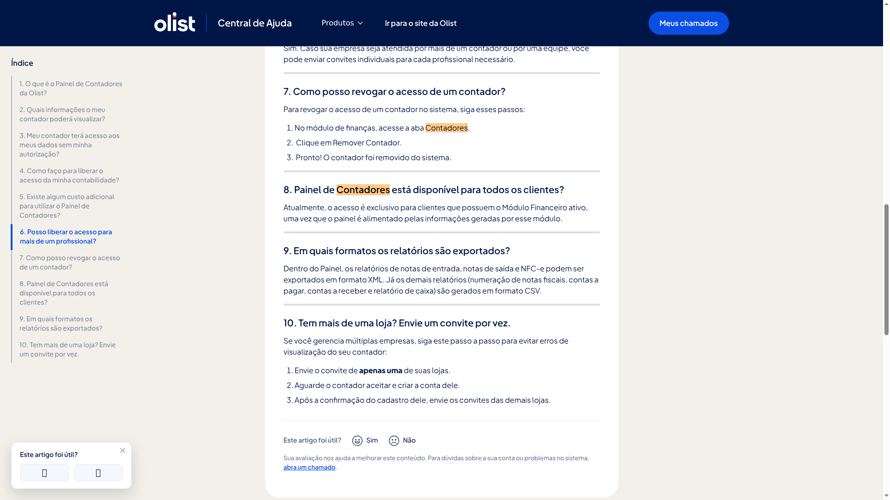

Contabilidade: acesso do contador, XMLs e Painel de Contadores
O Painel de Contadores, no ERP da Olist, permite que você autorize um contador a consultar, direto no sistema, um conjunto limitado de relatórios da empresa para o fechamento mensal. Você não precisa enviar notas e relatórios manualmente.
O acesso fica em Finanças > Painel de Contadores. Você convida o responsável pela contabilidade ou aceita uma solicitação feita por ele. Depois de autorizado, o contador exporta notas de entrada, notas de saída e NFC-e em XML e os demais relatórios permitidos em CSV. O acesso só existe depois do convite ou da autorização e pode ser removido depois.
Pré-requisitos
- Ter o módulo Financeiro ativo. O painel é exclusivo para clientes com esse módulo, porque é alimentado por ele.
- Ter o email, o número de celular e o CNPJ da pessoa responsável pela contabilidade.
- Concordar com os Termos de Uso antes de enviar o convite. O link Termos de Uso fica no formulário.
Importante
- O contador não vê os relatórios sem convite enviado pelo ERP ou autorização feita na plataforma.
- O acesso fica restrito a notas fiscais de entrada e saída, NFC-e, numeração de notas fiscais, contas a pagar, contas a receber e movimentações de caixa.
- Notas de entrada, notas de saída e NFC-e saem em XML. Numeração de notas, contas a pagar, contas a receber e caixa saem em CSV, no Painel do contador.
- Com várias lojas, envie o convite de apenas uma. Espere o contador aceitar e criar a conta e só então convide as demais.
- Se você remover o acesso do contador, será preciso convidá-lo novamente para liberar o acesso outra vez.
Instruções
Pela tela
-
Acesse Finanças > Painel de Contadores.

-
Se ainda não houver contador, a tela mostra Nenhum contador adicionado. Clique em Adicionar contador.

-
Preencha E-mail, Número de celular e CNPJ da pessoa responsável pela contabilidade. Os três campos são obrigatórios.
-
Marque Liberar acesso para todas as empresas do seu grupo somente se o mesmo acesso deve valer para todas. Para uma empresa, deixe desmarcado.
-
Marque Li e concordo com os Termos de Uso.

-
Clique em Enviar convite. A tela informa Convite enviado. Avise seu contador sobre o acesso.
Pela solicitação do contador
- No painel do contador, ele informa CNPJ, E-mail e Telefone.
- O contador clica em Solicitar Acesso.
- Acesse Finanças > Painel de Contadores e aceite a solicitação. O acesso fica autorizado e a tela confirma Acesso do contador autorizado com sucesso. O contador só passa a ver os relatórios depois dessa autorização.
Exportação de XML e CSV pelo contador
-
Libere o acesso pelo convite da tela ou aceitando a solicitação do contador.
-
O contador entra no Painel já autorizado.
-
No Painel, ele exporta os relatórios de notas de entrada, notas de saída e NFC-e em XML.

-
Os demais relatórios liberados — numeração de notas fiscais, contas a pagar, contas a receber e relatório de caixa — são gerados em CSV. O contador obtém os arquivos do fechamento sem você enviar as notas manualmente.
Resultado
Depois do envio ou da autorização, o contador consulta no Painel apenas os relatórios permitidos. Na sua lista, o acesso pode aparecer como Convite enviado ou Ativo.
Informações adicionais
- Não há custo adicional para clientes Olist nem para escritórios de contabilidade.
- Você pode convidar mais de um profissional. Cada um recebe um convite individual.
- Na mesma tela, Saiba mais abre a FAQ – Painel de Contadores Olist, com o passo a passo, os relatórios liberados e os formatos de exportação.
- As ações da lista são Reenviar convite, Cancelar convite e Remover contador. As confirmações correspondentes são Convite reenviado com sucesso., Convite cancelado com sucesso. e Acesso removido.
- Se a solicitação do contador não for aceita, a tela informa Solicitação recusada.